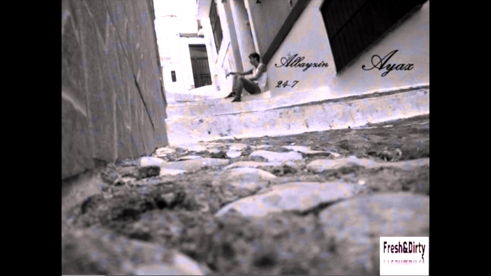
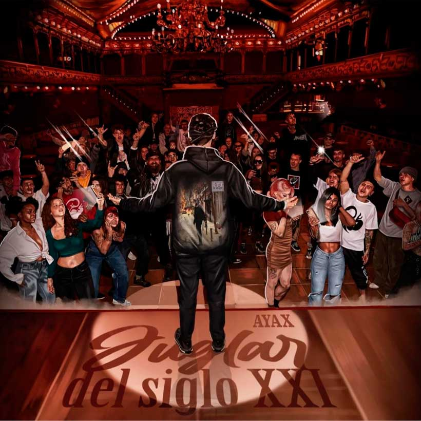
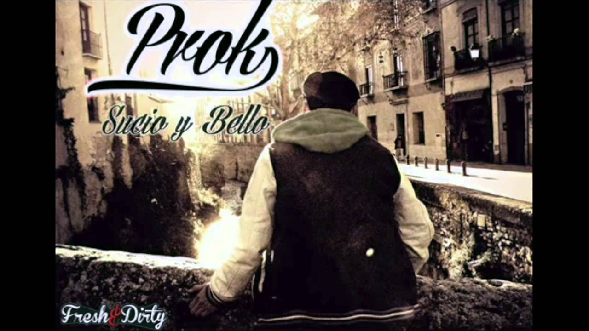
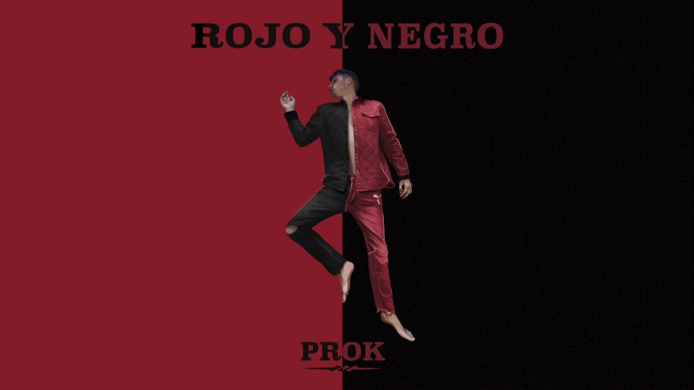
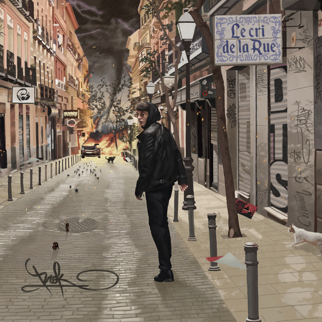

Discografía completa:
Ayax
Albayzin 24/7
2013: primera maqueta de Ayax.
El grito del esclavo
2014: segunda maqueta de Ayax.
Cara y Cruz
2018: primer disco en solitario de Ayax.
Juglar del Siglo XXI
2022: segundo disco de Ayax.
Prok
Sucio y Bello
2014: primer maqueta de Prok.
Rojo y Negro
2018: primer disco en solitario de Prok.
Le Cri de la Rue
2021: segundo disco de Prok.
Próximamente se espera el primer disco en conjunto de Ayax y Prok, actualmente en desarrollo.